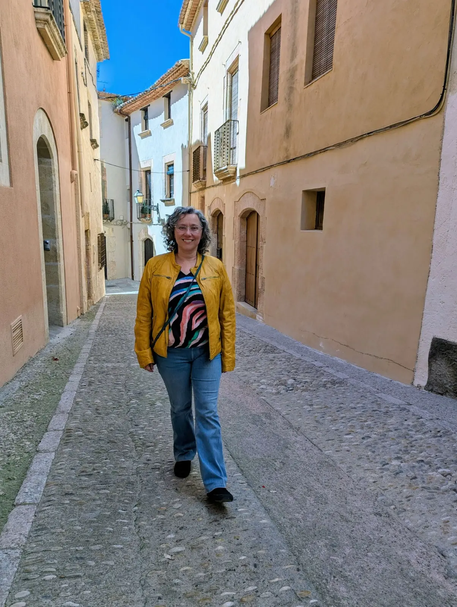

Debora P.
"Muy buena experiencia. Es una profesional cercana, sabe escuchar y te hace sentir cómoda desde el primer momento. Me ayudó a ordenar ideas y a ver algunas cosas con más claridad. La recomiendo sin duda."

Psicóloga en Altafulla y La Sénia · Terapia online, a domicilio y caminando
No siempre es fácil entender qué nos pasa.
Pero cuando le ponemos palabras, algo empieza a cambiar.
ContactarDesde siempre he sentido una conexión especial con las personas y su mundo emocional. Tras un recorrido inicial en informática, decidí escuchar aquello que siempre había estado en mí y formarme en psicología. Hoy acompaño procesos personales desde la escucha, el respeto y el cuidado, entendiendo el bienestar como un camino que se construye a lo largo de toda la vida.
Conocer más sobre mí"Muy buena experiencia. Es una profesional cercana, sabe escuchar y te hace sentir cómoda desde el primer momento. Me ayudó a ordenar ideas y a ver algunas cosas con más claridad. La recomiendo sin duda."
"Estoy muy agradecida a Ingrid, es una persona muy profesional y cercana, ayudo mucho a mi nieta, no puedo tener más que palabras de agradecimiento."
"Ingrid es una profesional muy cercana y empática. Destacaría su escucha y el cómo orientó mi tratamiento desde el primer momento focalizando en lo que verdaderamente me preocupaba. En sus sesiones respiré calma y me sentí muy acompañada."
Si lo deseas, también puedes consultar opiniones de otras personas en mi perfiles externos. Es una forma de conocer mejor como viven otras personas el proceso terapéutico y el acompañamiento.